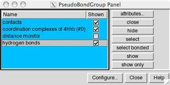

Pseudobonds are drawn to signify connections other than standard covalent bonds between atoms, such as distance monitors, contacts, and hydrogen bonds. They are also used to indicate missing segments or loops in crystal structures. A pseudobond group is a named set of zero to many pseudobonds that can be treated collectively.
Pseudobonds can be created arbitrarily (drawn between any pairs of atoms) using PseudoBond Reader.
The PseudoBond Panel lists the current pseudobond groups and conveniently enables many operations upon them. There are several ways to start the PseudoBond Panel, a tool in the General Controls category.
|  |
Once one or more groups of pseudobonds have been chosen within the left side of the PseudoBond Panel, any of several functions represented by buttons on the right side of the panel can be executed.
Individual pseudobond groups or blocks of groups can be chosen with the left mouse button. Ctrl-click toggles the state (chosen or not) of single line. A block of pseudobond groups can be chosen by dragging, or by clicking on the first (or last) line in the desired block and then Shift-clicking on its last (or first) line.
Configure... allows customization of which settings are shown as checkboxes on the left side of the panel, which buttons are included in the right side of the panel, and what functions are applied to double-clicked pseudobond groups. Close dismisses the PseudoBond Panel. Help brings up the PseudoBond Panel manual page in a browser window.
The Configure... button brings up another panel with three sections for customizing the PseudoBond Panel. The three sections are organized like index cards with their names on tabs across the top: Buttons, Columns, and Double Click. Clicking on a tab brings the corresponding card to the front.